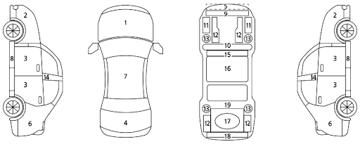

InspectK
INTERNAL INSPECTION CHECKLIST (진단사용 예비 점검표)
1. 기본 정보 및 매칭
LOT 번호: [ ]
차량 번호: [ ]
2. 차량 상태 전개도 (표기용)

W
판금 도색
X
교환
A
스크래치
C
부식
U
덴트
T
깨짐(T)
3. 필수 촬영 체크리스트 (40장 기준)
외장 (총 10장: 좌5, 우5, 앞,위,뒤)
하체 (총 8장: 휠4, 타이어4, 하부)
내장 (총 20장: 시트, 옵션, 대시보드)
[필독]
최상의 차량(No Accident)인 경우에만
Full Report
로 업그레이드하여 바이어에게 리포팅합니다. 사고 차량은 퀵체크 단계에서 중단합니다.
4. 최종 판정
Full Report 발행 (추천)
Quick Check 종료 (비추천)